Uses the ggplot2 package to draw a point-range plot of the average marginal effects computed by tidy.
# S3 method for marginaleffects plot(x, conf.int = TRUE, conf.level = 0.95, ...)
| x | An object produced by the |
|---|---|
| conf.int | Logical indicating whether or not to include a confidence interval. |
| conf.level | The confidence level to use for the confidence interval if
|
| ... | Additional arguments are pushed forward to |
A ggplot2 object
The tidy function calculates average marginal effects by taking the mean
of all the unit-level marginal effects computed by the marginaleffects
function.
